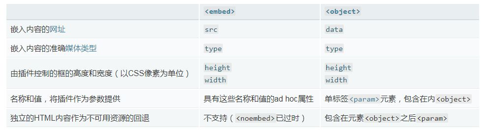

嵌入技术
任务目标：
了解如何使用<object>、<embed><iframe>在网页中嵌入如其他网页或Flash电影
<iframe>（属性包含了img的属性宽高和src）
iframe（内联框架）用于在网页内显示网页。(由于网页版权和不安全——需要配置CSP指令，内存消耗等原因不常用)
<iframe width="420" height="315" src="https://www.youtube.com/embed/QH2-TGUlwu4" frameborder="0" allowfullscreen>
</iframe>
frameborder:是否显示边框，1(yes),0(no)。建议使用css设置：border:none;。
height:框架的高度。建议使用css设置。
width:框架的宽度。建议使用css设置。
sandbox: 对iframe进行一些限制，IE10+支持
allowfullscreen: 是否允许iframe全屏，默认为false,设置为allowfullscreen="true"通过调用 requestFullscreen() 方法来激活全屏模式，这个属性被认为是过时（老旧，即将被淘汰）的属性并被重新定义为allow="fullscreen"。
iframe下的段落:当浏览器不兼容<iframe>标签时显示段落->回退机制
使用iframe作为链接的目标
链接的target属性必须引用iframe的name属性
实例
<iframe src="demo_iframe.htm" name="iframe_a"></iframe>
<embed>和<object>元素— 一种正在被淘汰的技术，但您仍然会时不时的看到它。
用来嵌入Flash,PDF,视频，SVG,图像

<embed>嵌入Flash影片到一个页面的例子：
<object>嵌入PDF文件到一个页面的例子：
课外扩展：
插件: 用来替应用程序增加一些所需要的特定的功能， 许多专业软件都提供给开发者撰写插件所需要的API。
插件和扩展的区别：
插件和扩展都是在现有的功能上进行修改或者增加。插件通常依赖于应用程序的用户界面 ，扩展通常没有多少限制，并提供一些可选的功能。
Chrome举例：
扩展（Extension），指的是通过调用 Chrome 提供的 Chrome API 来扩展浏览器功能的一种组件，工作在浏览器层面，使用 HTML + Javascript 语言开发[*]。比如著名的 Adblock plus。
插件（Plug-in），指的是通过调用 Webkit 内核 NPAPI来扩展内核功能的一种组件，工作在内核层面，理论上可以用任何一种生成本地二进制程序的语言开发，比如 C/C++、Delphi 等。比如Flash player 插件，就属于这种类型。一般在网页中用 <object> 或者 <embed>标签声明的部分，就要靠插件来渲染。
扩展是给能够给浏览器增加一些功能的附加软件，相当于是对浏览器实用功能的扩充。一般通过Javascript编制（当然可能还需要借助CSS、XUL等），运行在浏览器的Javascript引擎中，相对来说更安全，不易引起浏览器问题。
插件则是允许网站向用户提供内容并在浏览器中显示的程序，它是在浏览器之外需要独立编写的程序，一般是第三方提供的二进制文件，插件与浏览器在同一级别运行，所以更容易引起浏览器问题，如崩溃等。
扩展一般是压缩文件，如firefox是.xpi、chrome插件格式为.crx；而插件的格式通常是二进制文件，如windows下的插件一般是dll，linux下的插件一般是os格式。
API: 应用程序接口（英语：application programming interface，缩写作 API） 其主要目的是让应用程序开发人员得以调用一组例程( 子程序，是一个大型程序中的某部分代码，由一个或多个语句块组成。它负责完成某项特定任务，而且相较于其他代码，具备相对的独立性。)功能，而无须考虑其底层的源代码为何、或理解其内部工作机制的细节。API本身是抽象的，它仅定义了一个接口，而不涉及应用程序在实际实现过程中的具体操作。例如，图形库中的一组API定义了绘制指针的方式，可于图形输出设备上显示指针。当应用程序需要指针功能时，可在引用、编译时链接到这组API，而运行时就会调用此API的实现（库）来显示指针。
参考资料网址: